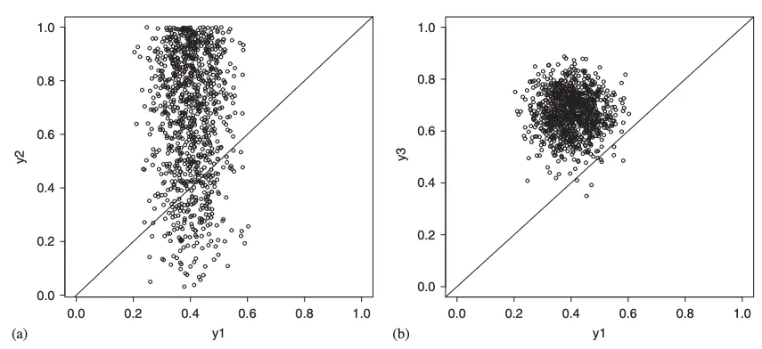
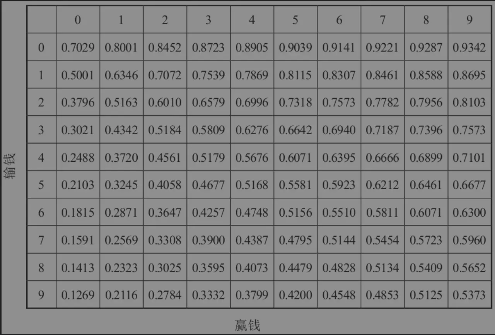
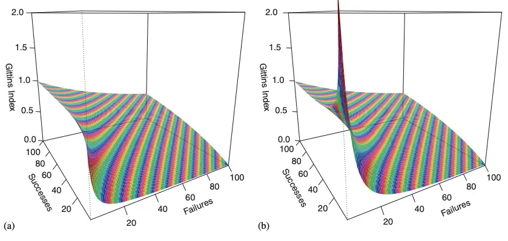
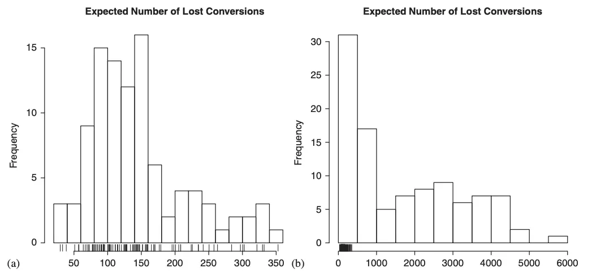
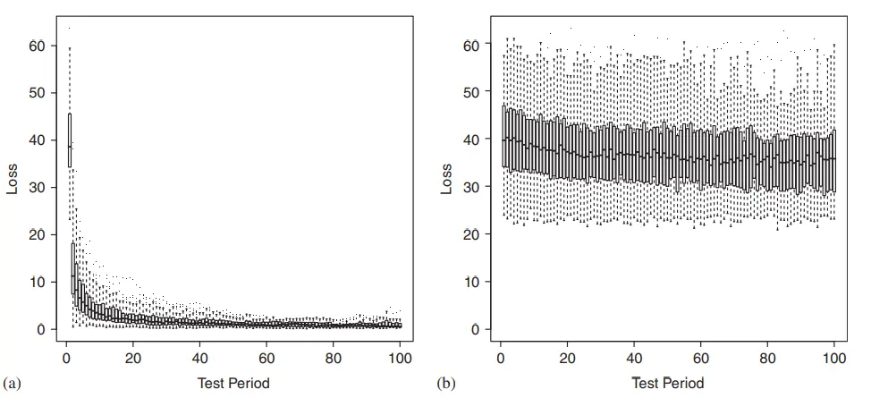
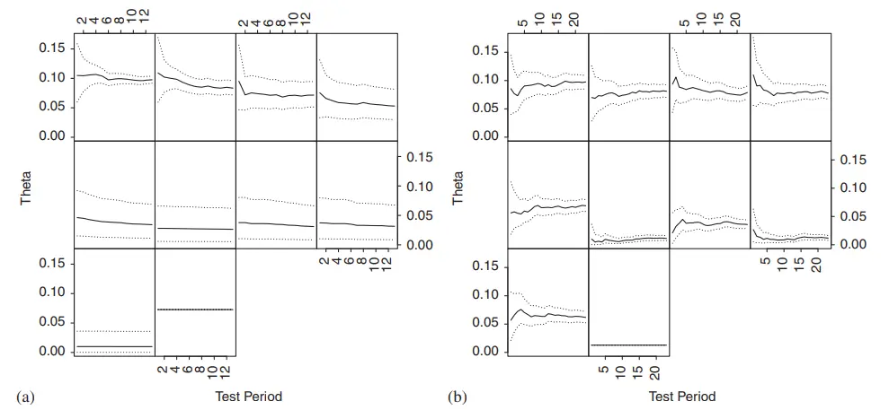
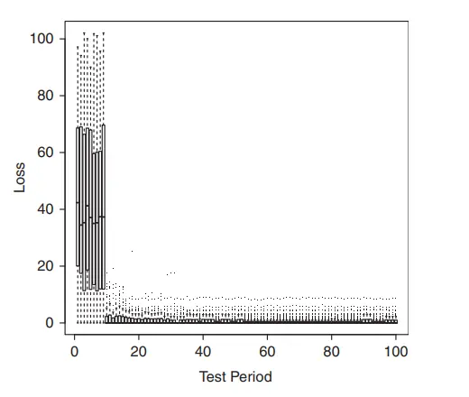
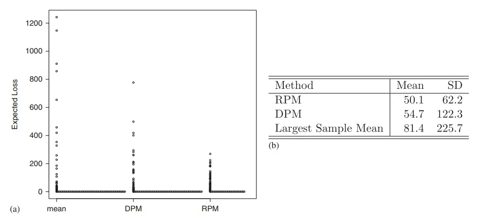
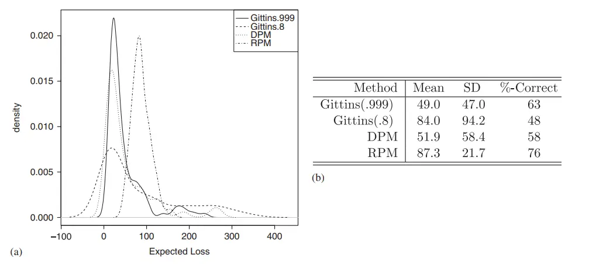

背景
多臂老虎机是一个在探索(exploration)和开发(exploitation)过程中寻找最高收益的问题。此类“实验”能力几乎已经成为了优秀实验平台的标配。
本篇是阅读《A modern Bayesian look at the multi-armed bandit》后结合个人理解的学习总结。它总结了基于贝叶斯的随机概率匹配法和其它相关方法。
1. 随机概率匹配（RPM）
定义\(Y_t = (y_1, ..., y_t)\)代表t时为止的奖励序列，\(a_t\)代表t时选择的臂，t时刻奖励\(y_t \sim f_{a_t}(y|\theta)\)，\(\theta\)是一个未知向量。
\(y_t \in (0, 1)\)情况下两种例子：
1. 伯努利老虎机，\(\theta = (\theta_1, ...,\theta_k)\)，\(f_{a_t}(y|\theta)\)参数为\(\theta_a\)
2. fractional factorial bandit（本文不关注）
定义\(\mu_a(\theta) = E(y_t | \theta, a_t = a)\)是\(f_{a}(y|\theta)\)的期望值，最佳策略应该一直选择\(\mu_a(\theta)\)最大的臂。
在伯努利分布下，\(\theta_a = \mu_a(\theta)\)。
定义\(p(\theta)\)是\(\theta\)的先验概率密度，此时以$p() \(产生\)\(，\)\(产生y，则0时刻选择a正确概率： >\)w_{a0} = Pr(_a = max{_1,… })$ （1)
定义\(I_a(\theta)\)为指示函数，\(\mu_a = max\{\mu_1,...\mu_k\}\)时\(I_a(\theta)=1\)：
> \(w_{a0} = E(I_a(\theta)) = \int I_a(\theta) p(\theta) d\theta\) （2）

如果没有关于\(\theta\)的先验，则先验视为各个\(\mu\)是一样的，\(w_{a0}\)是均匀分布。
观测到奖励情况后，通过贝叶斯方法进行更新，\(p(\theta | Y_t ) = \frac{p(Y_t|\theta)p(\theta)}{p(Y_t)}\)。t时刻：
> \(p(\theta | Y_t ) \propto p(\theta)\prod _{\tau = 1}^t f_{a_\tau}(y|\theta)\) (3)
则此时$w_{at} = Pr(_a = max{_1,…} | Y_t ) = E(I_a() | Y_t ) $ （4）
随机概率匹配用\(w_{at}\)来分配a的t+1时观测值，通过一种自然平衡探索与开发的方式。
1.1 概率分配计算
如果\(\theta^{(1)},...,\theta^{(G)}\)是来自\(p(\theta|Y_t)\)的独立抽样，则基于大数定理：
>\(w_{at} = \lim_{g\rightarrow \infty }\frac{1}{G}\sum^G_{g=1}I_a(\theta^g).\) （5）
如果\(f_a\)是指数族，而且\(p(\theta)\)是它的共轭分布，则可以独立的抽样\(\theta\)，否则可以用马可夫相关的方法进行抽样模拟。
\(\theta\)的后验抽样足够对概率匹配进行支持。
1.2 隐式分配
（5）可以不用显式计算，从\(p(\theta|Y_t)\)模拟 \(\theta^{t}\)，并选择\(a = argmax_a\mu_a(\theta^t)\)
1.3 探索(exploration)、开发(exploitation)和不确定性
随机概率匹配自然的包含了不确定性，下图为两臂情况下的情况：

在(a)中，错误选中概率为18%；在(b)中，错误选中概率为0.8%。
这个例子说明，随着学习的进行，探索的占比会减少。
2. 其它方法
2.1 The Gittins index(基廷斯指数)
此方法假设单臂未来的奖励会与一个几何分布有关：\(\sum_{t = 0} ^ {\infty} \gamma ^ty_t\)，其中\(0 \leq \gamma < 1\)
基廷斯提供了一种计算各个臂价值的算法，得到的结果称为基廷斯指数。它在前提可保证时是最优方案。


这部分的数学相关很复杂先跳过，简单了解可参考《算法之美》第二章相关部分。
对基廷斯指数的三个问题：
1. 不完全学习，可能最终收敛到次优解；
2. 各臂的参数需要是固定的；
3. 奖励减少结构必须是几何分布。
2.2 UCB算法(Upper Confidence Bounds)
计算每个手臂奖励均值及置信区间上限，然后选上限最高的手臂。
值得注意的是，此上限并不是常见的置信区间算法，而且比较难计算。
2.3 启发式策略
- 2.3.1 平均分配
次策略均匀的探索每个臂，直到其中一个臂奖励超过某个阈值，然后一直选择此臂。这种方法对\(\theta\)探索效果很好，但是前期成本高，导致整体奖励效果较差。类似于先进行一轮随机实验评估效果，然后选择效果最好的方案。
- 2.3.2 连胜就继续，输了就换其它
至少好于随机选择……当最优秀的策略效果也没有特别好时，此方案会过度探索，导致效果很差。
- 2.3.3 贪心策略
简单的贪心策略效果很差，比较好的是deterministic probability matching做法。但是在批量更新场景，一个更新周期只能探索一种方案，所以前期会表现特别差。
- 2.3.4 混合策略
混合策略是贪心之外，强制进行一定比例的探索，比如Epsilon-greedy或Epsilon-decreasing。不过上两种方法的敏感度不够高，因此还可以参考Softmax learning方法。
2.4 与概率匹配的对比
概率匹配结合了2.3中的多种好处。
3. 伯努利老虎机上使用不同策略的对比
定义\(\theta = (\theta_1, ...,\theta_k)\)，先验为\(\theta_a \sim U(0, 1)\)，它们之间相互独立。
\(Y_{at},N_{at}\)分别代表t时刻a的累计成功次数和观测次数。
则\(\theta = (\theta_1, ...,\theta_k)\)的后验为：
>\(p(\theta|Y_t) =\prod ^k_{a=1}Be(\theta_a|Y_{at}+1,N_{at} - Y_{at} + 1)\) (10)
其中\(B_e(\theta|\alpha, \beta)\)是贝塔分布。此时最佳概率为：
> \(w_{at} = \int_{0}^{1}Be(\theta_a|Y_{at}+1,N_{at} - Y_{at} + 1)\prod_{j\neq a}Pr(\theta_j < \theta_a | Y_{jt} + 1 - N_{jt} - Y_{jt} + 1)d\theta_a\) (11)
验证主要关注regret，最佳选择\(\mu^*(\theta) = max_a\{\mu_a(\theta) \}\)，手臂a在t时刻的观测次数为\(n_{at}\)，则t时刻的regret为：
> $L_t = an{at}(^*() - _a()) $ (12)
则T时段累计regret为\(L = \sum_{t= 1}^TL_t\)。以下是一些模拟对比结果。
3.1 批量更新场景
3.1.1 RPM对比平均分配
  
从测试数据看RPM会比后者好得多。
3.1.2 RPM对比贪心
 
可发现在批量更新场景，两种贪心策略效果都是比RPM差的。
3.2 实时更新场景

平均效果来看，RPM效果最差，但是它的标准差最小，最优解命中率最高；参数为0.999的Gittins index平均效果最好，标准差较大，且最优解的命中率低于RPM。
后记
RPM可以用来解决多臂老虎机问题，它基于后验抽样，易于实现、健壮性好，且在批量更新场景表现更佳。